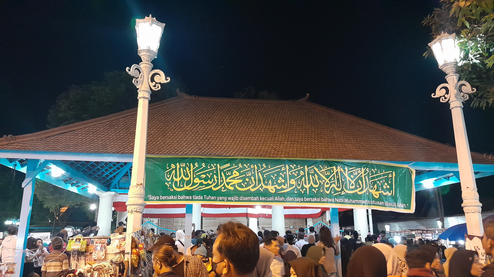
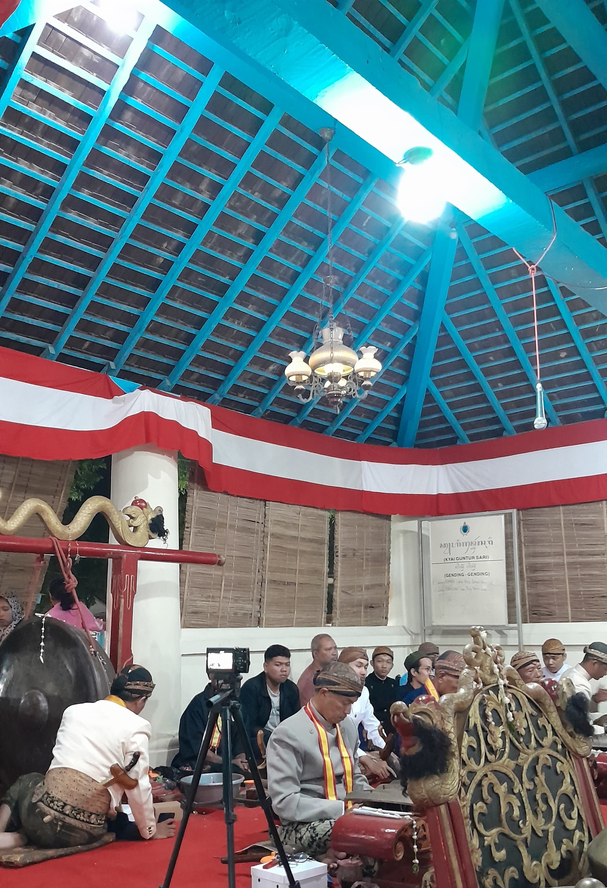
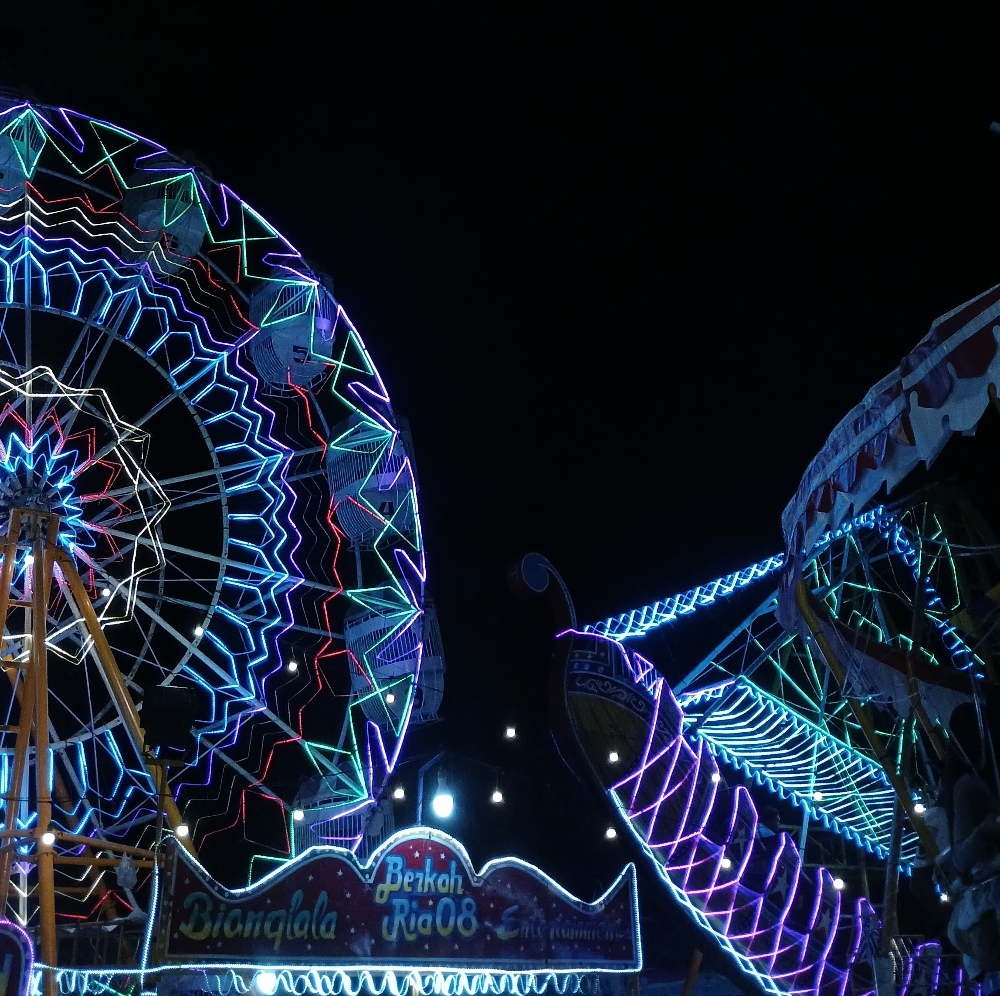
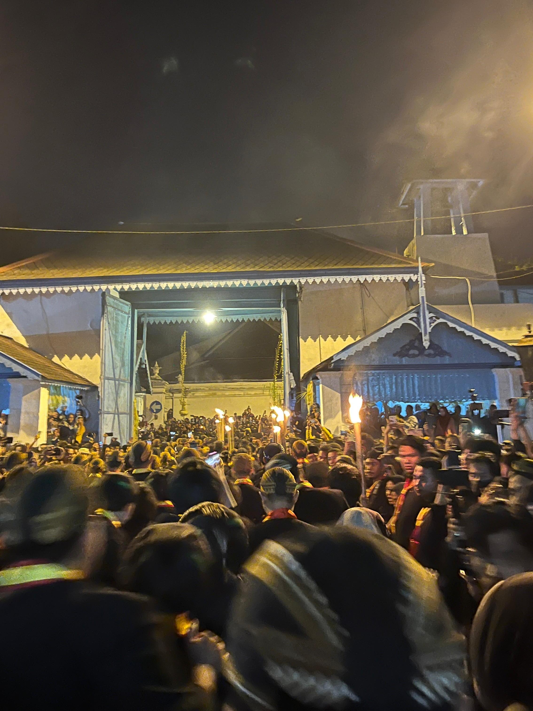

Kebudayaan
Serangkaian Tradisi Sekaten Keraton Surakarta Hadiningrat

Dengan berbagai tradisi kebudayaan yang ada di Indonesia, tradisi Sekaten ini hanya diselenggarakan di dua wilayah saja, yakni Kota Yogyakarta dan Kota Surakarta. Tradisi ini merupakan tradisi tahunan yang diselenggarakan untuk memperingati hari kelahiran atau Maulid Nabi Muhammad SAW., serta sebagai wadah untuk melestarikan budaya Jawa.
Dilansir dari berbagai sumber, kata Sekaten memiliki banyak pengertian yang berbeda, diantaranya kata Sekaten yang diambil dari bahasa Jawa “Sekati” yang merupakan nama perangkat gamelan yang ditabuh saat perayaan, kemudian “Sakhotain” yang bermakna akan penanaman nilai budi pekerti luhur, serta “Syahadatain” yang merupakan dua kalimat syahadat.
Meskipun kata Sekaten memiliki banyak pengertian, yang paling umum dan banyak diterima oleh masyarakat adalah Sekaten berasal dari kata “Syahadatain”, yang kemudian menjadi sarana perayaan Maulid Nabi Muhammad SAW., serta sebagai wadah pembinaan kehidupan dalam beragama dan bermasyarakat.
Sekaten Surakarta berpusat di lingkungan Keraton Surakarta Hadiningrat, meliputi kawasan Masjid Agung Surakarta, Alun-Alun Lor, dan Alun-Alun Kidul.
Pada kawasan Masjid Agung Surakarta tepatnya di Bangsal Pradangga Selatan dan Bangsal Pradangga Utara. Pada masing-masing bangsal ini, terdapat seperangkat gamelan pakurmatan. Gamelan Kyai Guntur Madu diletakkan pada sisi selatan dan Gamelan Kyai Guntur Sari diletakkan pada sisi utara. Dua gamelan milik Keraton Surakarta Hadiningrat ini sebelumnya telah dikirab dari Kori Kamandungan Lor Keraton.

Pembukaan Sekaten diawali dengan upacara ungeling gangsa atau tabuhan gamelan. Gamelan Kyai Guntur Madu menjadi gamelan pertama yang ditabuh baru kemudian Gamelan Kyai Guntur Sari. Gamelan Sekaten ditabuh selama tujuh hari secara berturut-turut, yakni pada tanggal 5 hingga 11 Rabiul Awal (Kalender Islam dan Jawa). Gamelan Sekaten akan berhenti ditabuh saat memasuki waktu sholat dan pada malam Jum’at.
Setelah gamelan ditabuh selama tujuh hari, maka tibalah puncak rangkaian upacara Sekaten yaitu Grebeg Maulud. Namun dua hari menjelang Grebeg Maulud akan diselenggarakan tradisi Tumplak Wajik berupa permainan lagu dengan kentongan. Ini dilakukan sebagai penanda dimulainya pembuatan gunungan.
Grebeg Maulud diselenggarakan pada tanggal 12 Rabiul Awal dengan mempersembahkan Gunungan. Gunungan ini berupa Gunungan Kakung yang membawa hasil bumi, seperti sayuran. Dan Gunungan Putri yang membawa makanan olahan, seperti kue tradisional. Gunungan tersebut dikirab dari dalam Keraton Surakarta Hadiningrat hingga halaman Masjid Agung Surakarta.

Seluruh rangkaian acara Sekaten ini juga turut diramaikan oleh Pasar Malam, yang diselenggarakan di kawasan Alun-Alun Lor atau Alun-Alun Kidul. Pasar Malam Sekaten ini biasanya berlangsung selama satu bulan penuh. Meskipun gamelan sudah berhenti ditabuh, Pasar Malam Sekaten masih terus diselenggarakan dengan menghadirkan berbagai wahana permainan, pedagang mainan tradisional, bazar kuliner, fashion, dan kebutuhan rumah tangga, musik dan hiburan, hingga cosplay karakter tokoh.
Upacara Sekaten menjadi tradisi yang selalu dinanti oleh masyarakat, khususnya warga Solo. Dengan hadirnya pagelaran-pagelaran tersebut diharapkan dapat membawa kebermanfaatan dan kebahagian, baik untuk umat muslim maupun umat beragama lainnya.
Ditulis oleh : Zulfa Afida
Sumber : surakarta.go.id. - regional.kompas.com - id.wikipedia.org - intisari.grid.id
Mengenal Tradisi Kirab Malam Satu Suro Keraton Surakarta Hadiningrat

Tradisi kirab malam satu suro merupakan tradisi yang sudah turun temurun sejak ratusan tahun lalu, tepatnya pada masa kepemimpinan Raja Pakubuwono X. Hingga saat ini tradisi Kirab Malam Satu Suro masih terus dilestarikan, dengan menghadirkan pemaknaan yang begitu berarti yaitu sebagai permohonan keselamatan dan sarana intropeksi diri menjadi pribadi yang lebih baik dari tahun sebelumnya.
Kirab Malam Satu Suro juga dikenal sebagai upacara pergantian tahun baru yang berlaku dalam kalender islam dan kalender jawa. Pada tahun ini Kirab Malam Satu Suro akan diselenggarakan pada hari Kamis, 26 Juni 2025 pukul 23.00 hingga Jum'at, 27 Juni 2025 pukul 03.00 WIB.
Kirab Malam Satu Suro diselenggarakan dengan melewati berbagai jalan utama Surakarta, dimulai dari Kori Kamandungan Lor Keraton Surakarta menuju Supit Urang, Jalan Pakubuwana, Gapura Gladag, Jalan Mayor Kusmanto, Jalan Kapten Mulyadi, Jalan Veteran, Jalan Yos Sudarso, Jalan Slamet Riyadi dan kembali ke Keraton Solo.
Ribuan peserta turut hadir dalam Kirab Malam Satu Suro, dengan mengenakan pakaian busana Jawi jangkep bagi pria dan kebaya hitam bagi wanita. Peserta kirab tersebut meliputi abdi dalem, putra - putri raja, serta kerabat keraton.
Tidak lupa kerbau bule Kyai Slamet yang menjadi cucuk lampah atau pemimpin barisan kirab. Selain kerbau bule, Keraton Surakarta Hadiningrat turut membawa pusaka dalam prosesi Kirab Malam Satu Suro. Dalam setiap tahunnya, jumlah pusaka yang dibawa berbeda-beda. Pusaka tersebut meliputi keris dan tombak yang dibungkus menggunakan kain sutra.
Antusiasme warga dalam menyambut tradisi ini sangat tinggi. Disepanjang jalan rute kirab ini selalu dipadati oleh warga, tidak hanya warga lokal saja namun warga yang berasal dari luar kota Solo juga turut hadir untuk menanti datangnya Kirab Malam Satu Suro. Mereka rela berdesak-desakan menyambut datangnya kirab karena mereka percaya dengan mengikuti kirab akan mendapat keberkahan dari Tuhan Yang Maha Esa.